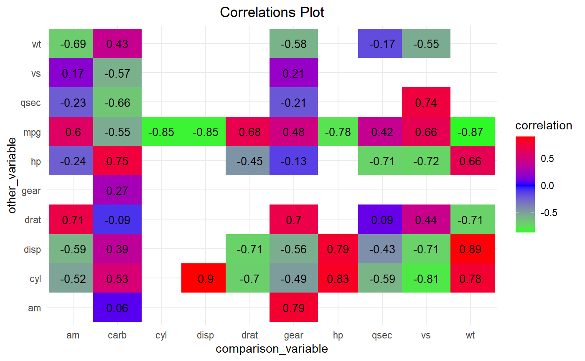

Build and Tune Several Models with manymodelr
2020-06-27
Source:vignettes/manymodelr_vignette.rmd
manymodelr_vignette.rmd
manymodelr: Build and Tune Several Models


In this vignette, we take a look at how we can simplify many machine learning tasks using manymodelr. We will take a look at the core functions first.
Installing the package
install.packages("manymodelr")
Once the package has been successfully installed, we can then proceed by loading the package and exploring some of the key functions.
Loading the package
library(manymodelr, warn.conflicts = FALSE) #> Loading required package: caret #> Loading required package: lattice #> Loading required package: ggplot2 #> Loading required package: Metrics #> #> Attaching package: 'Metrics' #> The following objects are masked from 'package:caret': #> #> precision, recall #> Loading required package: e1071 #> Welcome to manymodelr. #> For the latest development version, #> please see: https://www.github.com/Nelson-Gon/manymodelr. #> Please file issues at https://github.com/Nelson-Gon/manymodelr/issues
Sample Usage of Key Functions
agg_by_group
As one can guess from the name, this function provides an easy way to manipulate grouped data. We can for instance find the number of observations in the iris data set. The formula takes the form x~y where y is the grouping variable(in this case Species). One can supply a formula as shown next.
head(agg_by_group(iris,.~Species,length)) #> Grouped By[1]: Species #> #> Species Sepal.Length Sepal.Width Petal.Length Petal.Width #> 1 setosa 50 50 50 50 #> 2 versicolor 50 50 50 50 #> 3 virginica 50 50 50 50
head(agg_by_group(mtcars,cyl~hp+vs,sum)) #> Grouped By[2]: hp vs #> #> hp vs cyl #> 1 91 0 4 #> 2 110 0 12 #> 3 150 0 16 #> 4 175 0 22 #> 5 180 0 24 #> 6 205 0 8
multi_model_1
This is one of the core functions of the package. Since the function uses caret backend, we need to load caret before we can use it. To avoid, several messages showing up, we use the function suppressMessages. This assumes that one is familiar with machine learning basics.
set.seed(520) train_set<-createDataPartition(iris$Species,p=0.8,list=FALSE) valid_set<-iris[-train_set,] train_set<-iris[train_set,] ctrl<-trainControl(method="cv",number=5) m<-multi_model_1(train_set,"Species",".",c("knn","rpart"), "Accuracy",ctrl,new_data =valid_set)
The above message tells us that the model has returned our metrics for each of the model types we specified. These can be extracted as shown below. Other return values include predictions and a summary of the model.
m$metric #> # A tibble: 1 x 2 #> knn_accuracy rpart_accuracy #> <dbl> <dbl> #> 1 1 0.933
head(m$predictions) #> # A tibble: 6 x 2 #> knn rpart #> <chr> <chr> #> 1 setosa setosa #> 2 setosa setosa #> 3 setosa setosa #> 4 setosa setosa #> 5 setosa setosa #> 6 setosa setosa
- multi_model_2
This is similar to multi_model_1 with only one difference: it does not use metrics such as RMSE, accuracy and the like. This function is useful if one would like to fit and predict “simpler models” like generalized linear models or linear models, etc. Let’s take a look:
# fit a linear model and get predictions lin_model <- multi_model_2(iris[1:50,],iris[50:99,],"Sepal.Length","Petal.Length","lm") head(lin_model) #> Sepal.Length Sepal.Width Petal.Length Petal.Width Species predicted #> 1 5.1 3.5 1.4 0.2 setosa 4.972378 #> 2 4.9 3.0 1.4 0.2 setosa 6.761943 #> 3 4.7 3.2 1.3 0.2 setosa 6.653485 #> 4 4.6 3.1 1.5 0.2 setosa 6.870402 #> 5 5.0 3.6 1.4 0.2 setosa 6.382339 #> 6 5.4 3.9 1.7 0.4 setosa 6.707714
We can also fit a multilinear model as shown below:
head(multi_model_2(iris[1:50,],iris[50:99,],"Sepal.Length", "Petal.Length + Sepal.Width","lm")) #> Sepal.Length Sepal.Width Petal.Length Petal.Width Species predicted #> 1 5.1 3.5 1.4 0.2 setosa 4.902999 #> 2 4.9 3.0 1.4 0.2 setosa 5.771541 #> 3 4.7 3.2 1.3 0.2 setosa 5.714857 #> 4 4.6 3.1 1.5 0.2 setosa 5.761483 #> 5 5.0 3.6 1.4 0.2 setosa 4.972473 #> 6 5.4 3.9 1.7 0.4 setosa 5.476232
To take this a step further, we can fit a model with the square of Sepal.Width.
head(multi_model_2(iris[1:50,],iris[50:99,],"Sepal.Length", "Petal.Length + I(Sepal.Width)**2","lm")) #> Sepal.Length Sepal.Width Petal.Length Petal.Width Species predicted #> 1 5.1 3.5 1.4 0.2 setosa 4.902999 #> 2 4.9 3.0 1.4 0.2 setosa 5.771541 #> 3 4.7 3.2 1.3 0.2 setosa 5.714857 #> 4 4.6 3.1 1.5 0.2 setosa 5.761483 #> 5 5.0 3.6 1.4 0.2 setosa 4.972473 #> 6 5.4 3.9 1.7 0.4 setosa 5.476232
The above function does more and can fit and predict on any model type. Exploration is therefore left to the reader.
fit_model
Yet another core function, this allows us to fit any kind of model. It replaces modeleR which had several issues and development was discontinued. It can still work with some inaccuracies.
iris1 <- iris[1:50,] iris2 <- iris[51:100,] lm_model <- fit_model(iris1,"Sepal.Length","Petal.Length","lm") lm_model #> #> Call: #> lm(formula = Sepal.Length ~ Petal.Length, data = df) #> #> Coefficients: #> (Intercept) Petal.Length #> 4.2132 0.5423
To extract information about the model, we can use extract_model_info as follows. Say we wanted to extract the R squared, we could proceed as follows:
extract_model_info(lm_model, "r2") #> [1] 0.07138289
To extract the adjusted r squared, we can do the following:
extract_model_info(lm_model, "adj_r2") #> [1] 0.0520367
For the p value:
extract_model_info(lm_model, "p_value") #> (Intercept) Petal.Length #> 1.614927e-13 6.069778e-02
To extract multiple attributes:
extract_model_info(lm_model,c("p_value","response","call","predictors")) #> $p_value #> (Intercept) Petal.Length #> 1.614927e-13 6.069778e-02 #> #> $response #> [1] "Sepal.Length" #> #> $call #> lm(formula = Sepal.Length ~ Petal.Length, data = df) #> #> $predictors #> [1] "Petal.Length"
This is not restricted to linear models but will work for most model types. See help(extract_model_info) to see currently supported model types.
To add predictions to our data set, we can use add_model_predictions as follows:
# select only column 6 that has our predicted values head(add_model_predictions(lm_model, old_data = iris1, new_data = iris2))[6] #> predicted #> 1 6.761943 #> 2 6.653485 #> 3 6.870402 #> 4 6.382339 #> 5 6.707714 #> 6 6.653485
To do the same with dplyr, one can work as follows:
library(dplyr) #> #> Attaching package: 'dplyr' #> The following objects are masked from 'package:stats': #> #> filter, lag #> The following objects are masked from 'package:base': #> #> intersect, setdiff, setequal, union iris1 %>% add_model_predictions(model=lm_model,new_data = iris2) %>% select(predicted, everything()) %>% head() #> predicted Sepal.Length Sepal.Width Petal.Length Petal.Width Species #> 1 6.761943 5.1 3.5 1.4 0.2 setosa #> 2 6.653485 4.9 3.0 1.4 0.2 setosa #> 3 6.870402 4.7 3.2 1.3 0.2 setosa #> 4 6.382339 4.6 3.1 1.5 0.2 setosa #> 5 6.707714 5.0 3.6 1.4 0.2 setosa #> 6 6.653485 5.4 3.9 1.7 0.4 setosa
To add residuals to our data set, we can use add_model_residuals:
head(add_model_residuals(lm_model, iris1)[6]) #> residuals #> 1 0.12762214 #> 2 -0.07237786 #> 3 -0.21814860 #> 4 -0.42660712 #> 5 0.02762214 #> 6 0.26493436
With dplyr:
iris1 %>% add_model_residuals(model=lm_model) %>% add_model_predictions(new_data = iris2, model = lm_model) %>% select(predicted,residuals, everything()) %>% head() #> predicted residuals Sepal.Length Sepal.Width Petal.Length Petal.Width #> 1 6.761943 0.12762214 5.1 3.5 1.4 0.2 #> 2 6.653485 -0.07237786 4.9 3.0 1.4 0.2 #> 3 6.870402 -0.21814860 4.7 3.2 1.3 0.2 #> 4 6.382339 -0.42660712 4.6 3.1 1.5 0.2 #> 5 6.707714 0.02762214 5.0 3.6 1.4 0.2 #> 6 6.653485 0.26493436 5.4 3.9 1.7 0.4 #> Species #> 1 setosa #> 2 setosa #> 3 setosa #> 4 setosa #> 5 setosa #> 6 setosa
fit_models
This is similar to fit_model with the ability to fit many models with many predictors at once. A simple linear model for instance:
fit_models(df=iris,yname=c("Sepal.Length","Sepal.Width"),xname="Petal.Length + Petal.Width",modeltype="lm") #> [[1]] #> #> Call: #> lm(formula = Sepal.Length ~ Petal.Length + Petal.Width, data = df) #> #> Coefficients: #> (Intercept) Petal.Length Petal.Width #> 4.1906 0.5418 -0.3196 #> #> #> [[2]] #> #> Call: #> lm(formula = Sepal.Width ~ Petal.Length + Petal.Width, data = df) #> #> Coefficients: #> (Intercept) Petal.Length Petal.Width #> 3.5870 -0.2571 0.3640
get_var_corr
As can probably(hopefully) be guessed from the name, this provides a convenient way to get variable correlations. It enables one to get correlation between one variable and all other variables in the data set.
Previously, one would set get_all to TRUE if they wanted to get correlations between all variables. This argument has been dropped in favor of simply supplying an optional other_vars vector if one does not want to get all correlations.
Sample usage:
# getall correlations corrs <- get_var_corr(mtcars,comparison_var="mpg")
The result is as follows(default pearson):
head(corrs) #> comparison_var other_var p.value correlation lower_ci upper_ci #> 1 mpg cyl 6.112687e-10 -0.8521620 -0.92576936 -0.7163171 #> 2 mpg disp 9.380327e-10 -0.8475514 -0.92335937 -0.7081376 #> 3 mpg hp 1.787835e-07 -0.7761684 -0.88526861 -0.5860994 #> 4 mpg drat 1.776240e-05 0.6811719 0.43604838 0.8322010 #> 5 mpg wt 1.293959e-10 -0.8676594 -0.93382641 -0.7440872 #> 6 mpg qsec 1.708199e-02 0.4186840 0.08195487 0.6696186
Previously, one would also set drop_columns to TRUE if they wanted to drop factor columns. Now, a user simply provides a character vector specifying which column types(classes) should be dropped. It defaults to c("character","factor").
# purely demonstrative get_var_corr(iris,"Sepal.Length",other_vars="Petal.Length",drop_columns=c("factor","character"),method="spearman", exact=FALSE) #> Warning in get_var_corr.data.frame(iris, "Sepal.Length", other_vars = "Petal.Length", : Columns with classes in drop_columns have been discarded. You #> can disable this by setting yourself by setting drop_columns #> to NULL. #> comparison_var other_var p.value correlation #> 1 Sepal.Length Petal.Length 3.443087e-50 0.8818981
Similarly, get_var_corr_ (note the underscore at the end) provides a convenient way to get combination-wise correlations.
head(get_var_corr_(mtcars),6) #> comparison_var other_var p.value correlation lower_ci upper_ci #> 1 mpg cyl 6.112687e-10 -0.8521620 -0.92576936 -0.7163171 #> 2 mpg disp 9.380327e-10 -0.8475514 -0.92335937 -0.7081376 #> 3 mpg hp 1.787835e-07 -0.7761684 -0.88526861 -0.5860994 #> 4 mpg drat 1.776240e-05 0.6811719 0.43604838 0.8322010 #> 5 mpg wt 1.293959e-10 -0.8676594 -0.93382641 -0.7440872 #> 6 mpg qsec 1.708199e-02 0.4186840 0.08195487 0.6696186
To use only a subset of the data, we can use provide a list of columns to subset_cols. By default, the first value(vector) in the list is mapped to comparison_var and the other to other_Var. The list is therefore of length 2.
head(get_var_corr_(mtcars,subset_cols=list(c("mpg","vs"),c("disp","wt")),method="spearman",exact=FALSE)) #> comparison_var other_var p.value correlation #> 2 mpg disp 6.370336e-13 -0.9088824 #> 5 mpg wt 1.487595e-11 -0.8864220
plot_corr
Obtaining correlations would mostly likely benefit from some form of visualization. plot_corr aims to achieve just that. There are currently two plot styles that is squares and circles. circles has the shape argument that can allow for more flexibility with respect to shape. It should be noted that the correlation matrix supplied to this function is an object produced by get_var_corr_.
To modify the plot a bit, we can choose to switch the x and y values as shown below.
plot_corr(mtcars,show_which = "corr", round_which = "correlation",decimals = 2,x="other_var", y="comparison_var",plot_style = "squares" ,width = 1.1,custom_cols = c("green","blue","red"),colour_by = "correlation") #> Warning in plot_corr(mtcars, show_which = "corr", round_which = "correlation", : #> Using colour_by for the legend title.

To show significance of the results instead of the correlations themselves, we can set show_which to “signif” as shown below. By default, significance is set to 0.05. You can override this by supplying a different signif_cutoff.
# color by p value # change custom colors by supplying custom_cols # significance is default set.seed(233) plot_corr(mtcars, x="other_var", y="comparison_var",plot_style = "circles",show_which = "signif", colour_by = "p.value", sample(colours(),3)) #> Warning in plot_corr(mtcars, x = "other_var", y = "comparison_var", plot_style = #> "circles", : Using colour_by for the legend title.

To explore more options, please take a look at the documentation.
rowdiff
This is useful when trying to find differences between rows. The direction argument specifies how the subtractions are made while the exclude argument is used to specify classes that should be removed before calculations are made. Using direction="reverse" performs a subtraction akin to x-(x-1) where x is the row number.
head(rowdiff(iris,exclude = "factor",direction = "reverse")) #> Sepal.Length Sepal.Width Petal.Length Petal.Width #> 1 NA NA NA NA #> 2 -0.2 -0.5 0.0 0.0 #> 3 -0.2 0.2 -0.1 0.0 #> 4 -0.1 -0.1 0.2 0.0 #> 5 0.4 0.5 -0.1 0.0 #> 6 0.4 0.3 0.3 0.2
na_replace
This allows the user to conveniently replace missing values. Current options are ffill which replaces with the next non-missing value, samples that samples the data and does replacement, value that allows one to fill NAs with a specific value. Other common mathematical methods like min, max,get_mode, sd, etc are no longer supported. They are now available with more flexibility in standalone mde
head(na_replace(airquality, how="value", value="Missing"),8) #> Ozone Solar.R Wind Temp Month Day #> 1 41 190 7.4 67 5 1 #> 2 36 118 8.0 72 5 2 #> 3 12 149 12.6 74 5 3 #> 4 18 313 11.5 62 5 4 #> 5 Missing Missing 14.3 56 5 5 #> 6 28 Missing 14.9 66 5 6 #> 7 23 299 8.6 65 5 7 #> 8 19 99 13.8 59 5 8
na_replace_grouped
This provides a convenient way to replace values by group.
test_df <- data.frame(A=c(NA,1,2,3), B=c(1,5,6,NA),groups=c("A","A","B","B")) # Replace NAs by group # replcae with the next non NA by group. na_replace_grouped(df=test_df,group_by_cols = "groups",how="ffill") #> groups A B #> 1 A 1 1 #> 2 A 1 5 #> 3 B 2 6 #> 4 B 3 6
The use of mean,sd,etc is no longer supported. Use mde instead which is focused on missingness.
Exploring Further
The vignette has been short and therefore is non exhaustive. The best way to explore this and any package or language is to practice. For more examples, please use ?function_name and see a few implementations of the given function.
Reporting Issues
If you would like to contribute, report issues or improve any of these functions, please raise a pull request at (manymodelr)
“Programs must be written for people to read, and only incidentally for machines to execute.” - Harold Abelson
Thank You